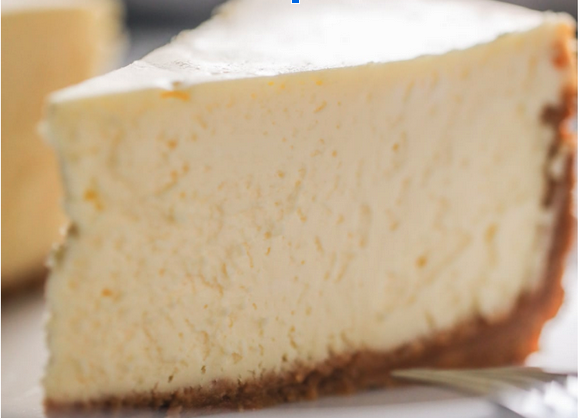

Home
New York Style Cheesecake

This is my favorite cheesecake recipe. I make it for most occasions and best of all it doesn't even require a water bath to bake.
Ingredients
For the graham cracker crust:
- 1 1/4 cups graham cracker crumbs
- 4 tablespoons granulated sugar
- 5 tablespoons melted butter
For the cheesecake filling
- 40 oz cream cheese at room temperature
- 1 1/4 cups granulated sugar
- 1/2 cup sour cream at room temperature
- 2 tsp vanilla extract
- 4 large eggs at room temperature
- Any cheesecake toppings desired
Steps
- Place oven racks in the center of the oven. Preheat oven to 350 degrees.
- In a medium sized bowl, stir graham cracker crumbs together with sugar and melted butter until well incorporated and mixture looks like damp sand. Using the bottom of a measuring cup, press crust into the bottom and half way up the sides of a 9-inch springform pan. Bake 7 minutes. Remove from oven and set aside.
- Reduce oven temperature to 325 degrees.
- In a large bowl or bowl of a stand mixer, mix cream cheese 30 seconds 'til smooth. Scrape the sides and bottom of the bowl and add in granulated sugar, sour cream and vanilla. Mix again until incorporated. Scrape the sides and bottom of the bowl and mix again briefly.
- Crack eggs into a liquid measuring cup and using a fork, beat until well scrambled. With the mixer on low, slowly pour in the eggs into the cream cheese mixture and stop stirring once egg has been incorporated. Remove bowl from mixer and scrape the sides and bottom again, ensuring the entire mixture is smooth. If there are a few small lumps, try to fold in using the rubber scraper.
- Once the batter is completely smooth and ready, tap the bowl on the counter for 30-45 seconds to remove as many air bubbles as possible. You should see them popping on the surface as you tap the bowl. Pour filling into the center of the graham cracker crust and gently smooth the top. Will be very full!
- Bake for 30 minutes at 325 degrees. Reduce temperature to 250 degrees and continue cooking for 45 minutes more. Once this time has elapsed, turn oven off and keep cheesecake inside for another 30 minutes for some carryover cooking without opening the oven door. Crack oven door to let cheesecake cool slowly for one hour before removing. At this point, cheesecake should be slightly warm. Bring cheesecake to room temperature on the counter (3-4 hours) before covering with plastic wrap and transferring to the fridge.
- Refrigerate until chilled completely (6 hours to overnight). To serve, open springform pan and remove collar. Decorate as desired.
- Dip a sharp knife into hot water, wipe off any excess water and slice. I like to dip my knife in water between each slice to get really clean-looking pieces.